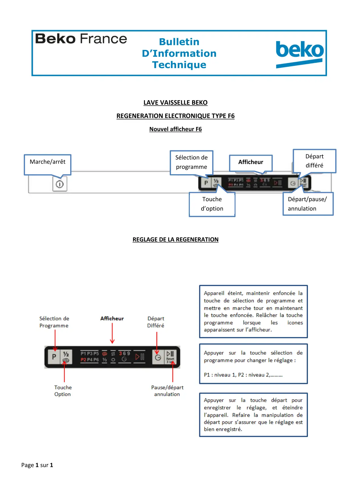

Régénération lave vaisselle F6

Page 1 sur 1BulletinD’InformationTechniqueZA de la Voûte73650 PETIT COURONNE01.58.34.46.46LAVE VAISSELLE BEKOREGENERATION ELECTRONIQUE TYPE F6Nouvel afficheur F6REGLAGE DE LA REGENERATIONSélection deprogrammeMarche/arrêtAfficheurDépartdifféréTouched’optionDépart/pause/annulation
1 / 1